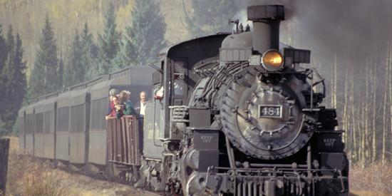
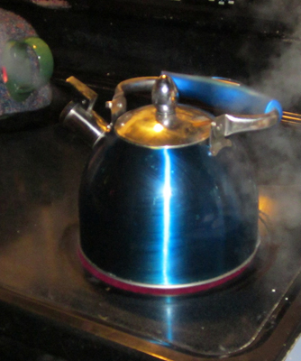
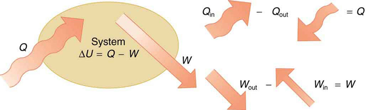
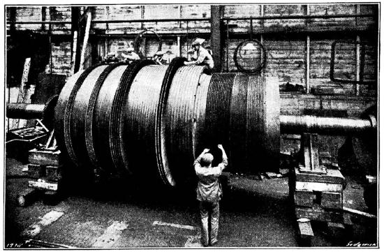
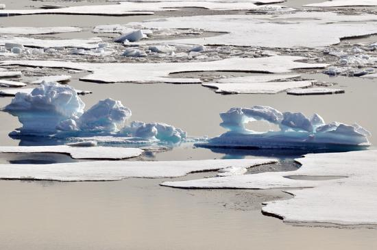

- Define the first law of thermodynamics.
- Describe how conservation of energy relates to the first law of thermodynamics.
- Identify instances of the first law of thermodynamics working in everyday situations, including biological metabolism.
- Calculate changes in the internal energy of a system, after accounting for heat transfer and work done.
If we are interested in how heat transfer is converted into doing work, then the conservation of energy principle is important. Thefirst law of thermodynamicsapplies the conservation of energy principle to systems where heat transfer and doing work are the methods of transferring energy into and out of the system.

Thefirst law of thermodynamicsstates that the change in internal energy of a system equals the net heat transferintothe system minus the net work donebythe system. In equation form, the first law of thermodynamics is
Here \(\Delta U\) is thechange in internal energy\(U\)of the system. \(Q\) is thenet heat transferred into the system—that is, \(Q\) is the sum of all heat transfer into and out of the system. \(W\) is thenet work done by the system—that is, \(W\) is the sum of all work done on or by the system. We use the following sign conventions: if \(Q\) is positive, then there is a net heat transfer into the system; if \(W\) is positive, then there is net work done by the system. So positive \(Q\) adds energy to the system and positive \(W\) takes energy from the system. Thus \(\Delta U = Q - W\). Note also that if more heat transfer into the system occurs than work done, the difference is stored as internal energy. Heat engines are a good example of this—heat transfer into them takes place so that they can do work (Figure . We will now examine \(Q, \, W\) and \(\Delta U\) further.

LAW OF THERMODYNAMICS AND LAW OF CONSERVATION OF ENERGY
The first law of thermodynamics is actually the law of conservation of energy stated in a form most useful in thermodynamics. The first law gives the relationship between heat transfer, work done, and the change in internal energy of a system.
Heat transfer \(Q\) and doing work \(W\) are the two everyday means of bringing energy into or taking energy out of a system. The processes are quite different. Heat transfer, a less organized process, is driven by temperature differences. Work, a quite organized process, involves a macroscopic force exerted through a distance. Nevertheless, heat and work can produce identical results.For example, both can cause a temperature increase. Heat transfer into a system, such as when the Sun warms the air in a bicycle tire, can increase its temperature, and so can work done on the system, as when the bicyclist pumps air into the tire. Once the temperature increase has occurred, it is impossible to tell whether it was caused by heat transfer or by doing work. This uncertainty is an important point. Heat transfer and work are both energy in transit—neither is stored as such in a system. However, both can change the internal energy \(U\) of a system. Internal energy is a form of energy completely different from either heat or work.
We can think about the internal energy of a system in two different but consistent ways. The first is the atomic and molecular view, which examines the system on the atomic and molecular scale. Theinternal energy\(U\) of a system is the sum of the kinetic and potential energies of its atoms and molecules. Recall that kinetic plus potential energy is called mechanical energy. Thus internal energy is the sum of atomic and molecular mechanical energy. Because it is impossible to keep track of all individual atoms and molecules, we must deal with averages and distributions. A second way to view the internal energy of a system is in terms of its macroscopic characteristics, which are very similar to atomic and molecular average values.
Macroscopically, we define the change in internal energy \(\Delta U\) to be that given by the first law of thermodynamics (Equation \ref{first}): \[\Delta U = Q - W \nonumber\]
Many detailed experiments have verified that \(\Delta U = Q - W\), where \(\Delta U\) is the change in total kinetic and potential energy of all atoms and molecules in a system. It has also been determined experimentally that the internal energy \(U\) of a system depends only on the state of the system andnot how it reached that state.More specifically, \(U\) is found to be a function of a few macroscopic quantities (pressure, volume, and temperature, for example), independent of past history such as whether there has been heat transfer or work done. This independence means that if we know the state of a system, we can calculate changes in its internal energy \(U\) from a few macroscopic variables.
MACROSCOPIC vs. MICROSCOPIC
In thermodynamics, we often use the macroscopic picture when making calculations of how a system behaves, while the atomic and molecular picture gives underlying explanations in terms of averages and distributions. We shall see this again in later sections of this chapter. For example, in the topic of entropy, calculations will be made using the atomic and molecular view.
To get a better idea of how to think about the internal energy of a system, let us examine a system going from State 1 to State 2. The system has internal energy \(U_1\) in State 1, and it has internal energy \(U_2\) in State 2, no matter how it got to either state. So the change in internal energy
is independent of what caused the change. In other words, \(\delta U\)is independent of path. By path, we mean the method of getting from the starting point to the ending point. Why is this independence important? Both \(Q\) and\(W\) dependon path, but \(\Delta U\) does not (Equation \ref{first}). This path independence means that internal energy \(U\) is easier to consider than either heat transfer or work done.
![The first part of the picture shows a system in the form of a circle for explanation purposes. The heat entering and work done are represented by bold arrows. A quantity of heat Q in equals forty joules, is shown to enter the system and Q out equals negative twenty five joules is shown to leave the system. The energy of the system in is marked as fifteen joules. At the right-hand side of the circle, a work W in equals negative four joules is shown to be applied on the system and a work W out equals ten joules is shown to leave the system. The energy of the system out is marked as six joules. The second part of the picture shows a system in the form of a circle for explanation purposes. The heat entering and work done are represented by bold arrows. A work of negative one hundred fifty nine is shown to enter the system. The energy in the system is shown as one hundred fifty nine joules. The out energy of the system is one hundred fifty joules. A heat Q out of negative one hundred fifty joules is shown to leave the system as an outward arrow.](images/ch15/fig15-4-the-first-part-of-the-picture-shows-a-sy.png)
In part (a), we must first find the net heat transfer and net work done from the given information. Then the first law of thermodynamics (Equation \ref{first}).
can be used to find the change in internal energy. In part (b), the net heat transfer and work done are given, so the equation can be used directly.
The net heat transfer is the heat transfer into the system minus the heat transfer out of the system, or
Similarly, the total work is the work done by the system minus the work done on the system, or
No matter whether you look at the overall process or break it into steps, the change in internal energy is the same.
Here the net heat transfer and total work are given directly to be \(Q = -150.00 \, J\) and \(W = -159.00 \, J\), so that
A very different process in part (b) produces the same 9.00-J change in internal energy as in part (a). Note that the change in the system in both parts is related to \(\Delta U\) and not to the individual \(Q\)s or \(W\)s involved. The system ends up in thesamestate in both (a) and (b). Parts (a) and (b) present two different paths for the system to follow between the same starting and ending points, and the change in internal energy for each is the same—it is independent of path.
#### Human Metabolism and the First Law of Thermodynamics
Human metabolismis the conversion of food into heat transfer, work, and stored fat. Metabolism is an interesting example of the first law of thermodynamics in action. We now take another look at these topics via the first law of thermodynamics. Considering the body as the system of interest, we can use the first law to examine heat transfer, doing work, and internal energy in activities ranging from sleep to heavy exercise. What are some of the major characteristics of heat transfer, doing work, and energy in the body? For one, body temperature is normally kept constant by heat transfer to the surroundings. This means \(Q\) is negative. Another fact is that the body usually does work on the outside world. This means \(W\) is positive. In such situations, then, the body loses internal energy, since \(\Delta U = Q - W\) is negative.
Now consider the effects of eating. Eating increases the internal energy of the body by adding chemical potential energy (this is an unromantic view of a good steak). The bodymetabolizesall the food we consume. Basically, metabolism is an oxidation process in which the chemical potential energy of food is released. This implies that food input is in the form of work. Food energy is reported in a special unit, known as the Calorie. This energy is measured by burning food in a calorimeter, which is how the units are determined.
In chemistry and biochemistry, one calorie (spelled with alowercasec) is defined as the energy (or heat transfer) required to raise the temperature of one gram of pure water by one degree Celsius. Nutritionists and weight-watchers tend to use thedietarycalorie, which is frequently called a Calorie (spelled with acapitalC). One food Calorie is the energy needed to raise the temperature of onekilogramof water by one degree Celsius. This means that one dietary Calorie is equal to one kilocalorie for the chemist, and one must be careful to avoid confusion between the two.
Again, consider the internal energy the body has lost. There are three places this internal energy can go—to heat transfer, to doing work, and to stored fat (a tiny fraction also goes to cell repair and growth). Heat transfer and doing work take internal energy out of the body, and food puts it back. If you eat just the right amount of food, then your average internal energy remains constant. Whatever you lose to heat transfer and doing work is replaced by food, so that, in the long run, \(\Delta U = 0\). If you overeat repeatedly, then \(\Delta U\) is always positive, and your body stores this extra internal energy as fat. The reverse is true if you eat too little. If \(\Delta U\) is negative for a few days, then the body metabolizes its own fat to maintain body temperature and do work that takes energy from the body. This process is how dieting produces weight loss.
Life is not always this simple, as any dieter knows. The body stores fat or metabolizes it only if energy intake changes for a period of several days. Once you have been on a major diet, the next one is less successful because your body alters the way it responds to low energy intake. Your basal metabolic rate (BMR) is the rate at which food is converted into heat transfer and work done while the body is at complete rest. The body adjusts its basal metabolic rate to partially compensate for over-eating or under-eating. The body will decrease the metabolic rate rather than eliminate its own fat to replace lost food intake. You will chill more easily and feel less energetic as a result of the lower metabolic rate, and you will not lose weight as fast as before. Exercise helps to lose weight, because it produces both heat transfer from your body and work, and raises your metabolic rate even when you are at rest. Weight loss is also aided by the quite low efficiency of the body in converting internal energy to work, so that the loss of internal energy resulting from doing work is much greater than the work done.It should be noted, however, that living systems are not in thermal equilibrium.
The body provides us with an excellent indication that many thermodynamic processes areirreversible. An irreversible process can go in one direction but not the reverse, under a given set of conditions. For example, although body fat can be converted to do work and produce heat transfer, work done on the body and heat transfer into it cannot be converted to body fat. Otherwise, we could skip lunch by sunning ourselves or by walking down stairs. Another example of an irreversible thermodynamic process is photosynthesis. This process is the intake of one form of energy—light—by plants and its conversion to chemical potential energy. Both applications of the first law of thermodynamics are illustrated in Figure . One great advantage of conservation laws such as the first law of thermodynamics is that they accurately describe the beginning and ending points of complex processes, such as metabolism and photosynthesis, without regard to the complications in between.
![Part a of the figure is a pictorial representation of metabolism in a human body. The food is shown to enter the body as shown by a bold arrow toward the body. Work W and heat Q leave the body as shown by bold arrows pointing outward from the body. Delta U is shown as the stored food energy. Part b of the figure shows the metabolism in plants .The heat from the sunlight is shown to fall on a plant represented as Q in. The heat given out by the plant is shown as Q out by an arrow pointing away from the plant.](images/ch15/fig15-5-part-a-of-the-figure-is-a-pictorial-repr.jpg)
The table presents a summary of terms relevant to the first law of thermodynamics.
| Term | Definition |
|---|---|
| \(U\) | Internal energy—the sum of the kinetic and potential energies of a system’s atoms and molecules. Can be divided into many subcategories, such as thermal and chemical energy. Depends only on the state of a system (such as its \(P\), \(V\) and \(T\), not on how the energy entered the system. Change in internal energy is path independent. |
| \(Q\) | Heat—energy transferred because of a temperature difference. Characterized by random molecular motion. Highly dependent on path. \(Q\) entering a system is positive. |
| \(W\) | Work—energy transferred by a force moving through a distance. An organized, orderly process. Path dependent. \(W\) done by a system (either against an external force or to increase the volume of the system) is positive. |
📖 OpenStax College Physics, Section 15.01. openstax.org · CC BY 4.0
- Define the first law of thermodynamics.
- Describe how conservation of energy relates to the first law of thermodynamics.
- Identify instances of the first law of thermodynamics working in everyday situations, including biological metabolism.
- Calculate changes in the internal energy of a system, after accounting for heat transfer and work done.

One of the most important things we can do with heat transfer is to use it to do work for us. Such a device is called aheat engine. Car engines and steam turbines that generate electricity are examples of heat engines. Figure shows schematically how the first law of thermodynamics applies to the typical heat engine.
![The figure shows a schematic representation of a heat engine. The heat engine is represented by a circle. The heat entering the system is shown as Q sub in, represented as a bold arrow toward the circle, and the heat coming out of the heat engine is shown as Q sub out, represented by a narrower bold arrow leaving the circle. The work labeled as W is shown to leave the heat engine as represented by another bold arrow leaving the circle. At the center of the circle are two equations. First, the change in internal energy of the system, delta U, equals zero. Consequently, W equals Q sub in minus Q sub out.](images/ch15/fig15-7-the-figure-shows-a-schematic-representat.jpg)
![Figure a shows a piston attached to a movable cylinder which is attached to the right of another gas filled cylinder. The heat Q sub in is shown to be transferred to the gas in the cylinder as shown by a bold arrow toward it. The force of the gas on the moving cylinder with the piston is shown as F equals P times A shown as a vector arrow pointing toward the right. The change in internal energy is marked in the diagram as delta U sub a equals Q sub in. Figure b shows a piston attached to a movable cylinder which is attached to the right of another gas filled cylinder. The force of the gas has moved the cylinder with the piston by a distance d toward the right. The change in internal energy is marked in the diagram as delta U sub b equals negative W sub out. The piston is shown to have done work by change in position, marked as F d equal to W sub out. Figure c shows a piston attached to a movable cylinder which is attached to the right of another gas filled cylinder. The piston attached to the cylinder is shown to reach back to the initial position shown in figure a. The distance d is traveled back and heat Q sub out is shown to leave the system as represented by an outward arrow. The force driving backward is shown as a vector arrow pointing to the left, labeled F prime. F prime is shown less than F. The work done by the force F prime is shown by the equation W sub in equal to F prime times d.](images/ch15/fig15-8-figure-a-shows-a-piston-attached-to-a-mo.jpg)
Figure :(a) Heat transfer to the gas in a cylinder increases the internal energy of the gas, creating higher pressure and temperature. (b) The force exerted on the movable cylinder does work as the gas expands. Gas pressure and temperature decrease when it expands, indicating that the gas’s internal energy has been decreased by doing work. (c) Heat transfer to the environment further reduces pressure in the gas so that the piston can be more easily returned to its starting position.
The illustrations above show one of the ways in which heat transfer does work. Fuel combustion produces heat transfer to a gas in a cylinder, increasing the pressure of the gas and thereby the force it exerts on a movable piston. The gas does work on the outside world, as this force moves the piston through some distance. Heat transfer to the gas cylinder results in work being done. To repeat this process, the piston needs to be returned to its starting point. Heat transfer now occurs from the gas to the surroundings so that its pressure decreases, and a force is exerted by the surroundings to push the piston back through some distance. Variations of this process are employed daily in hundreds of millions of heat engines. We will examine heat engines in detail in the next section. In this section, we consider some of the simpler underlying processes on which heat engines are based.
A process by which a gas does work on a piston at constant pressure is called anisobaric process. Since the pressure is constant, the force exerted is constant and the work done is given as
![The diagram shows an isobaric expansion of a gas filled cylinder held vertically. V is the volume of gas in the cylinder. A is the area of cross section of the cylinder. The cylinder has a movable piston with a rod attached to it at the top of the cylinder. A heat Q sub in is shown to enter the cylinder from below. A force F equals P times A is shown to act upward from the bottom of the cylinder. The piston is shown to have been displaced by a vertical distance d upward. The volume displaced is given by delta V equals A times d. The work output shown as W sub out is equal to F times d, which is also equal to P times A times d, which in turn equals P times delta V.](images/ch15/fig15-9-the-diagram-shows-an-isobaric-expansion-.jpg)
\[W = Fd\] See the symbols as shown in Figure . Now \(F = PA\), and so \[W = PAd.\] Because the volume of a cylinder is its cross-sectional area \(A\) times its length \(d\), we see that \(Ad = \Delta V\), the change in volume; thus, \[W = P\Delta V \, (isobaric \, process).\] Note that if \(\Delta V\) is positive, then \(W\) is positive, meaning that work is donebythe gas on the outside world.
(Note that the pressure involved in this work that we’ve called \(P\) is the pressure of the gasinsidethe tank. If we call the pressure outside the tank \(P_{ext}\), an expanding gas would be workingagainstthe external pressure; the work done would therefore be \(W = -P_{ext}\delta V\) (isobaric process). Many texts use this definition of work, and not the definition based on internal pressure, as the basis of the First Law of Thermodynamics. This definition reverses the sign conventions for work, and results in a statement of the first law that becomes \(\Delta U = Q + W\).)
It is not surprising that \(W = P\Delta V\), since we have already noted in our treatment of fluids that pressure is a type of potential energy per unit volume and that pressure in fact has units of energy divided by volume. We also noted in our discussion of the ideal gas law that \(PV\)
has units of energy. In this case, some of the energy associated with pressure becomes work.
Figure shows a graph of pressure versus volume (that is, a \(PV\) diagram for an isobaric process. You can see in the figure that the work done is the area under the graph. This property of \(PV\) diagrams is very useful and broadly applicable:the work done on or by a system in going from one state to another equals the area under the curve on a\(PV\)diagram.
![The graph of pressure verses volume is shown for a constant pressure. The pressure P is along the Y axis and the volume is along the X axis. The graph is a straight line parallel to the X axis for a value of pressure P. Two points are marked on the graph at either end of the line as A and B. A is the starting point of the graph and B is the end point of graph. There is an arrow pointing from A to B. The term isobaric is written on the graph. For a length of graph equal to delta V the area of the graph is shown as a shaded area given by P times delta V which is equal to work W.](images/ch15/fig15-10-the-graph-of-pressure-verses-volume-is-s.jpg)
![The diagram in part a shows a pressure versus volume graph. The pressure is along the Y axis and the volume is along the X axis. The curve is a smooth falling curve from the highest point A to the lowest point B. The curve is segmented into small vertical rectangular sections of equal width. One of the sections is marked as width of delta V sub one along the X axis. The pressure P sub one average multiplied by delta V sub one gives the work done for that strip of the graph. Part b of the figure shows a similar graph for the reverse path. The curve now slopes upward from point A to point B. An equation in the top right of the graph reads W sub in equals the opposite of W sub out for the same path.](images/ch15/fig15-11-the-diagram-in-part-a-shows-a-pressure-v.jpg)
We can see where this leads by considering Figure (a), which shows a more general process in which both pressure and volume change. The area under the curve is closely approximated by dividing it into strips, each having an average constant pressure \(P_{i(ave)}\). The work done is \(W_i = P_{i(ave)}\Delta V_i\) for each strip, and the total work done is the sum of the \(W_i\). Thus the total work done is the total area under the curve. If the path is reversed, as in Figure (b), then work is done on the system. The area under the curve in that case is negative, because \(\Delta V\) is negative.
![Part a of the diagram shows a pressure versus volume graph. The pressure is along the Y axis and the volume is along the X axis. The curve has a rectangular shape. The curve is labeled A B C D. The paths A B and D C represent isobaric processes as shown by lines pointing toward the right, and A D and B C represent isochoric processes, as shown by lines pointing vertically downward. W sub A B C is shown greater than W sub A D C. The area below the curve A B C D, filling the rectangle A B C D, and the area immediately below path D C are also shaded. Part b of the diagram shows a pressure versus volume graph. The pressure is along the Y axis and the volume is along the X axis. The curve has a rectangular shape and is labeled A B C D. The paths A B and C D represent isobaric processes; A B is a line pointing to the right, and C D is a line pointing to the left. The paths B C and D A represent isochoric processes; B C points vertically downward, and D A points vertically upward. The length of the graph along A B is marked as delta V equals five hundred centimeters cubed. The line A B on the graph is shown to have a pressure P sub A B equals one point five multiplied by ten to the power six Newtons per meter square. The line D on the graph is shown to have a pressure P sub C D equals one point two multiplied by ten to the power five Newtons per meter squared. The total work is marked as W sub tot equals W sub out plus W sub in. Part c of the diagram shows a pressure versus volume graph. The pressure is along the Y axis and the volume is along the X axis. The graph is a closed loop in the form of an ellipse with the arrow pointing in clockwise direction. The shaded area inside the ellipse represents the work done.](images/ch15/fig15-12-part-a-of-the-diagram-shows-a-pressure-v.jpg)
Calculate the total work done in the cyclical process ABCDA shown in Figure (b) by the following two methods to verify that work equals the area inside the closed loop on the \(PV\)
diagram. (Take the data in the figure to be precise to three significant figures.) (a) Calculate the work done along each segment of the path and add these values to get the total work. (b) Calculate the area inside the rectangle ABCDA.
To find the work along any path on a \(PV\) diagram, you use the fact that work is pressure times change in volume, or \(W = P\Delta V\).
So in part (a), this value is calculated for each leg of the path around the closed loop.
The work along path AB is \[W_{AB} = P_{AB}\Delta Y_{AB}\] \[= (1.50 \times 10^6 \, N/m^2)(5.00 \times 10^{-4} \, m^3) = 750 \, J.\] Since the path BC is isochoric, \(\Delta V_{BC} = 0\), and so \(W_{BC} = 0\). The work along path CD is negative, since \(\Delta V_{CD} \) is negative (the volume decreases). The work is \[W_{CD} = P_{CD}\Delta V_{CD}\] \[= (2.00 \times 10^5 \, N/m^2)(-5.00 \times 10^{-4} \, m^3) = -100 \, J.\]
Again, since the path DA is isochoric, \(\delta V_{DA} = 0\), and so \(W_{DA} = 0\). Now the total work is \[W = W_{AB} + W_{BC} + W_{CD} + W_{DA}\] \[ = 750 \, J + 0 + (-100 \, J) + 0 = 650 \, J.\]
The area inside the rectangle is its height times its width, or \[area = (P_{AB} - P_{CD})\Delta V\] \[= [(1.50 \times 10^6 \, N/m^2) - (2.00 \times 10^5 \, N/m^2)] (5.00 \times 1-^{-4} m^3)\] \[= 650 \, J.\]
Thus, \[area = 650 \, J = W.\]
The result, as anticipated, is that the area inside the closed loop equals the work done. The area is often easier to calculate than is the work done along each path. It is also convenient to visualize the area inside different curves on \(PV\) diagrams in order to see which processes might produce the most work. Recall that work can be done to the system, or by the system, depending on the sign of \(W\). A positive \(W\) is work that is done by the system on the outside environment; a negative \(W\) is work that is done by the system on the outside environment; a negative \(W\) represents work done by the environment on the system.
Figure (a) shows two other important processes on a \(PV\) diagram. For comparison, both are shown starting from the same point A. The upper curve ending at point B is anisothermalprocess—that is, one in which temperature is kept constant. If the gas behaves like an ideal gas, as is often the case, and if no phase change occurs, then \(PV = nRT\). Since \(T\) is constant, \(PV\) is a constant for an isothermal process. We ordinarily expect the temperature of a gas to decrease as it expands, and so we correctly suspect that heat transfer must occur from the surroundings to the gas to keep the temperature constant during an isothermal expansion. To show this more rigorously for the special case of a monatomic ideal gas, we note that the average kinetic energy of an atom in such a gas is given by \[\dfrac{1}{2}m\overline v^2 = \dfrac{3}{2}kT.\] The kinetic energy of the atoms in a monatomic ideal gas is its only form of internal energy, and so its total internal energy \(U\) is \[U = N\dfrac{1}{2}m\overline v^2 = \dfrac{3}{2}NkT, \, (monatomic \, ideal \, gas),\] where \(N\) is the number of atoms in the gas. This relationship means that the internal energy of an ideal monatomic gas is constant during an isothermal process—that is, \(\Delta U = 0\). If the internal energy does not change, then the net heat transfer into the gas must equal the net work done by the gas. That is, because \(\Delta U = Q - W = 0\) here, \(Q = W\). We must have just enough heat transfer to replace the work done. An isothermal process is inherently slow, because heat transfer occurs continuously to keep the gas temperature constant at all times and must be allowed to spread through the gas so that there are no hot or cold regions.
Also shown in Figure (a) is a curve AC for anadiabaticprocess, defined to be one in which there is no heat transfer—that is, \(Q = 0\). Processes that are nearly adiabatic can be achieved either by using very effective insulation or by performing the process so fast that there is little time for heat transfer. Temperature must decrease during an adiabatic expansion process, since work is done at the expense of internal energy: \[U = \dfrac{3}{2}NkT.\] (You might have noted that a gas released into atmospheric pressure from a pressurized cylinder is substantially colder than the gas in the cylinder.) In fact, because \(Q = 0, \, \Delta U = -W\) for an adiabatic process. Lower temperature results in lower pressure along the way, so that curve AC is lower than curve AB, and less work is done. If the path ABCA could be followed by cooling the gas from B to C at constant volume (isochorically), Figure (b), there would be a net work output.
![Part a of the figure shows a graph for pressure versus volume. The pressure is along the y axis and the volume is along the x axis. There are two curves. The first curve begins at point A and falls smoothly downward to point B. The graph is shown for an isothermal process. The second curve also begins at point A but falls below the first curve and ends at point C vertically below point B. This graph is shown for an adiabatic process. A line joins point B and C to meet on the X axis. Also a line is drawn from point A to meet the X axis. The area under both the curves is shaded. The graph in figure b is similar to the graph in figure a. Only the directions of the curves are changed. The graph begins from A and moves downward to point B. Then from point B the curve drops vertically downward to C. From point C the graph has a smooth rise back to point A. All directions represented using arrows.](images/ch15/fig15-13-part-a-of-the-figure-shows-a-graph-for-p.jpg)
Both isothermal and adiabatic processes such as shown in Figure are reversible in principle. Areversible processis one in which both the system and its environment can return to exactly the states they were in by following the reverse path. The reverse isothermal and adiabatic paths are BA and CA, respectively. Real macroscopic processes are never exactly reversible. In the previous examples, our system is a gas (like that in Figure , and its environment is the piston, cylinder, and the rest of the universe. If there are any energy-dissipating mechanisms, such as friction or turbulence, then heat transfer to the environment occurs for either direction of the piston. So, for example, if the path BA is followed and there is friction, then the gas will be returned to its original state but the environment will not—it will have been heated in both directions. Reversibility requires the direction of heat transfer to reverse for the reverse path. Since dissipative mechanisms cannot be completely eliminated, real processes cannot be reversible.
There must be reasons that real macroscopic processes cannot be reversible. We can imagine them going in reverse. For example, heat transfer occurs spontaneously from hot to cold and never spontaneously the reverse. Yet it would not violate the first law of thermodynamics for this to happen. In fact, all spontaneous processes, such as bubbles bursting, never go in reverse. There is a second thermodynamic law that forbids them from going in reverse. When we study this law, we will learn something about nature and also find that such a law limits the efficiency of heat engines. We will find that heat engines with the greatest possible theoretical efficiency would have to use reversible processes, and even they cannot convert all heat transfer into doing work. The table summarizes the simpler thermodynamic processes and their definitions.
| Isobaric | Constant pressure | \(W = P\Delta V\) |
|---|---|---|
| Isochoric | Constant volume | \(W = 0\) |
| Isothermal | Constant temperature | \(Q = W\) |
| Adiabatic | No heat transfer | \(Q = 0\) |
PHET EXPLORATIONS: STATES OF MATTER
Watch different types of molecules form a solid, liquid, or gas in teh States of Matter simuator. Add or remove heat and watch the phase change. Change the temperature or volume of a container and see a pressure-temperature diagram respond in real time. Relate the interaction potential to the forces between molecules.
📖 OpenStax College Physics, Section 15.02. openstax.org · CC BY 4.0
- State the expressions of the second law of thermodynamics.
- Calculate the efficiency and carbon dioxide emission of a coal-fired electricity plant, using second law characteristics.
- Describe and define the Otto cycle.

The second law of thermodynamics deals with the direction taken by spontaneous processes. Many processes occur spontaneously in one direction only—that is, they are irreversible, under a given set of conditions. Although irreversibility is seen in day-to-day life—a broken glass does not resume its original state, for instance—complete irreversibility is a statistical statement that cannot be seen during the lifetime of the universe. More precisely, anirreversible processis one that depends on path. If the process can go in only one direction, then the reverse path differs fundamentally and the process cannot be reversible. For example, as noted in the previous section, heat involves the transfer of energy from higher to lower temperature. A cold object in contact with a hot one never gets colder, transferring heat to the hot object and making it hotter. Furthermore, mechanical energy, such as kinetic energy, can be completely converted to thermal energy by friction, but the reverse is impossible. A hot stationary object never spontaneously cools off and starts moving. Yet another example is the expansion of a puff of gas introduced into one corner of a vacuum chamber. The gas expands to fill the chamber, but it never regroups in the corner. The random motion of the gas molecules could take them all back to the corner, but this is never observed to happen. (See Figure
![Part a of the figure shows spontaneous heat transfers. A rectangular section is divided down the center, and then marked hot on the left end and cold on the right. Heat Q is shown to flow from the hot end to the cold end as shown by a bold arrow toward the right. Part b of the figure shows a car moving on a horizontal road toward the right with initial velocity v. The car brake is applied after some time. The final velocity v sub f is shown equal to zero. Heat is released by the car. Part c of the figure shows two parts. The first part shows a burst of gas let into a vacuum chamber using a sprayer. The molecules of gas are shown to move in a random manner shown as dashed zigzag arrows. The second part of the same diagram shows the next stage after the air burst is sprayed. The molecules of air are shown to be arranged in uniform distribution as shown by horizontal, parallel dashed curves in the medium.](images/ch15/fig15-15-part-a-of-the-figure-shows-spontaneous-h.jpg)
The fact that certain processes never occur suggests that there is a law forbidding them to occur. The first law of thermodynamics would allow them to occur—none of those processes violate conservation of energy. The law that forbids these processes is called the second law of thermodynamics. We shall see that the second law can be stated in many ways that may seem different, but which in fact are equivalent. Like all natural laws, the second law of thermodynamics gives insights into nature, and its several statements imply that it is broadly applicable, fundamentally affecting many apparently disparate processes.
The already familiar direction of heat transfer from hot to cold is the basis of our first version of thesecond law of thermodynamics.
The Second Law of Thermodynamics (first expression)
Heat transfer occurs spontaneously from higher- to lower-temperature bodies but never spontaneously in the reverse direction.
Another way of stating this: It is impossible for any process to have as its sole result heat transfer from a cooler to a hotter object.
Now let us consider a device that uses heat transfer to do work. As noted in the previous section, such a device is called a heat engine, and one is shown schematically in (b). Gasoline and diesel engines, jet engines, and steam turbines are all heat engines that do work by using part of the heat transfer from some source. Heat transfer from the hot object (or hot reservoir) is denoted as \(Q_f\), while heat transfer into the cold object (or cold reservoir) is \(Q_c\), and the work done by the engine is \(W\). The temperatures of the hot and cold reservoirs are \(T_h\) and \(T_c\), respectively.
![Part a of the figure shows the spontaneous heat transfer from a hot system to a cold system. The hot reservoir at temperature T sub h is represented by a rectangular section in the top and the cold reservoir at temperature T sub c is shown as a rectangular section at the bottom. Heat is shown to flow from hot reservoir to cold reservoir as shown by a bold arrow pointing downward. Part b of the figure shows a heat engine represented as a circle. The hot reservoir at temperature T sub h is represented by a rectangular section at the top and a cold reservoir at temperature T sub c is shown as a rectangular section at the bottom. Heat Q sub h is transferred out of the hot reservoir, work W is the output equals Q sub h minus Q sub c, and heat Q sub c is the heat transferred into the cold reservoir. All these are shown using bold arrows.](images/ch15/fig15-16-part-a-of-the-figure-shows-the-spontaneo.jpg)
Because the hot reservoir is heated externally, which is energy intensive, it is important that the work is done as efficiently as possible. In fact, we would like \(W\) to equal \(Q_h\) and for there to be no heat transfer to the environment \((Q_c = 0)\). Unfortunately, this is impossible. Thesecond law of thermodynamicsalso states, with regard to using heat transfer to do work (the second expression of the second law):
The Second Law of Thermodynamics (second expression)
It is impossible in any system for heat transfer from a reservoir to completely convert to work in a cyclical process in which the system returns to its initial state.
Acyclical processbrings a system, such as the gas in a cylinder, back to its original state at the end of every cycle. Most heat engines, such as reciprocating piston engines and rotating turbines, use cyclical processes. The second law, just stated in its second form, clearly states that such engines cannot have perfect conversion of heat transfer into work done. Before going into the underlying reasons for the limits on converting heat transfer into work, we need to explore the relationships among \(W, \, Q_h\), and \(Q_c\) and to define the efficiency of a cyclical heat engine. As noted, a cyclical process brings the system back to its original condition at the end of every cycle. Such a system’s internal energy \(U\) is the same at the beginning and end of every cycle—that is, \(\Delta U = 0\). The first law of thermodynamics states that
where \(Q\) is thenetheat transfer during the cycle \((Q = Q_h - Q_c)\) and \(W\) is the net work done by the system. Since \(\Delta U = 0\) for a complete cycle, we have
Thus the net work done by the system equals the net heat transfer into the system, or
just as shown schematically in Figure (b). The problem is that in all processes, there is some heat transfer \(Q_c\) to the environment—and usually a very significant amount at that.
In the conversion of energy to work, we are always faced with the problem of getting less out than we put in. We defineconversion efficiency \(Eff\)to be the ratio of useful work output to the energy input (or, in other words, the ratio of what we get to what we spend). In that spirit, we define the efficiency of a heat engine to be its net work output \(W\) divided by heat transfer to the engine \(Q_h\), that is,
Since \(W = Q_h - Q_c\) in a cyclical process, we can also express this as
making it clear that an efficiency of 1, or 100%, is possible only if there is no heat transfer to the environment \((Q_c = 0)\). Note that all \(Q\)s are positive. The direction of heat transfer is indicated by a plus or minus sign. For example, \(Q-c\) is out of the system and so is preceded by a minus sign.
A coal-fired power station is a huge heat engine. It uses heat transfer from burning coal to do work to turn turbines, which are used to generate electricity. In a single day, a large coal power station has \(2.50 \times 10^{14} \, J\) of heat transfer from coal and \(1.48 \times 10^14 \, J\) of heat transfer into the environment. (a) What is the work done by the power station? (b) What is the efficiency of the power station? (c) In the combustion process, the following chemical reaction occurs: \(C + O_2 \rightarrow CO_2\) This implies that every 12 kg of coal puts 12 kg + 16 kg + 16 kg = 44 kg of carbon dioxide into the atmosphere. Assuming that 1 kg of coal can provide \(2.5 \times 10^6 \, J\) of heat transfer upon combustion, how much \(CO_2\) is emitted per day by this power plant?
We can use \(W = Q_h - Q_c\) to find the work output \(W\),
assuming a cyclical process is used in the power station. In this process, water is boiled under pressure to form high-temperature steam, which is used to run steam turbine-generators, and then condensed back to water to start the cycle again.
Work output is given by:
Substituting the given values:
The efficiency can be calculated with \(Eff = \dfrac{W}{Q_h}\) since \(Q_H\) is given and work \(W\) was found in the first part of this example.
Efficiency is given by \(Eff = \dfrac{W}{Q_h}\). The work \(W\) was just found to be \(1.01 \times 10^{14}\), and \(Q_h\) is given, so the efficiency is
The daily consumption of coal is calculated using the information that each day there is
Assuming that the coal is pure and that all the coal goes toward producing carbon dioxide, the carbon dioxide produced per day is
This is 370,000 metric tons of \(CO2\) produced every day.
If all the work output is converted to electricity in a period of one day, the average power output is 1180 MW (this is left to you as an end-of-chapter problem). This value is about the size of a large-scale conventional power plant. The efficiency found is acceptably close to the value of 42% given for coal power stations. It means that fully 59.2% of the energy is heat transfer to the environment, which usually results in warming lakes, rivers, or the ocean near the power station, and is implicated in a warming planet generally. While the laws of thermodynamics limit the efficiency of such plants—including plants fired by nuclear fuel, oil, and natural gas—the heat transfer to the environment could be, and sometimes is, used for heating homes or for industrial processes. The generally low cost of energy has not made it economical to make better use of the waste heat transfer from most heat engines. Coal-fired power plants produce the greatest amount of \(\ce{CO2}\) per unit energy output (compared to natural gas or oil), making coal the least efficient fossil fuel.
With the information given in Example , we can find characteristics such as the efficiency of a heat engine without any knowledge of how the heat engine operates, but looking further into the mechanism of the engine will give us greater insight. Figure illustrates the operation of the common four-stroke gasoline engine. The four steps shown complete this heat engine’s cycle, bringing the gasoline-air mixture back to its original condition.
![The figure shows four diagrams a, b, c, and d representing four stages of a four stroke gasoline engine. The construction of the engine has the base chamber whose cross section is in the shape of a square with flat corners, the top portion of the chamber is extended into a cylindrical section. The cylindrical section ends in the upper section with two valves, an inlet and an outlet. The cylindrical section has a movable cylinder with a piston attached to it. The piston is connected to the crank shaft in the base gas chamber. There is a spark plug on the top most part of the cylinder between the two valves. The four parts of the diagram show various stages of this four stoke engine. Part a of the diagram shows the air fuel mixture enters through the inlet valve in the upper section of the engine. The outlet valve is shown to be closed. The air and fuel is shown to exert a pressure on the piston acting downward. This force is shown to move the rotating crank shaft in clockwise direction in the gas chamber. This is the intake stroke. Part b of the diagram shows the compression stroke. Both the inlet and outlet valves are closed. The air and fuel mixture is shown to be compressed. The piston is shown to rise up as shown by a vertically pointing arrow. The piston is at the edge of the cylinder near the valves. The crankshaft in the gas chamber has shown to complete one complete cycle of rotation in the gas chamber. Part c of the diagram shows the power stroke. It has two parts, first the ignition stroke. This shows ignition of the fuel in the cylinder and pressure buildup in the region. Then in the second part the piston is shown to descend down the cylinder moving the crankshaft in the gas chamber in the clockwise direction. Part d of the figure shows the exhaust stroke. The piston expels the hot gas by moving upward and the gas is expelled through the exhaust valve.](images/ch15/fig15-17-the-figure-shows-four-diagrams-a-b-c-and.jpg)
TheOtto cycleshown in Figure \(\PageIndex{5a}\) is used in four-stroke internal combustion engines, although in fact the true Otto cycle paths do not correspond exactly to the strokes of the engine.
The adiabatic process AB corresponds to the nearly adiabatic compression stroke of the gasoline engine. In both cases, work is done on the system (the gas mixture in the cylinder), increasing its temperature and pressure. Along path BC of the Otto cycle, heat transfer \(Q_h\) into the gas occurs at constant volume, causing a further increase in pressure and temperature. This process corresponds to burning fuel in an internal combustion engine, and takes place so rapidly that the volume is nearly constant. Path CD in the Otto cycle is an adiabatic expansion that does work on the outside world, just as the power stroke of an internal combustion engine does in its nearly adiabatic expansion. The work done by the system along path CD is greater than the work done on the system along path AB, because the pressure is greater, and so there is a net work output. Along path DA in the Otto cycle, heat transfer \(Q_c\)
from the gas at constant volume reduces its temperature and pressure, returning it to its original state. In an internal combustion engine, this process corresponds to the exhaust of hot gases and the intake of an air-gasoline mixture at a considerably lower temperature. In both cases, heat transfer into the environment occurs along this final path.
![Part a of the figure shows a graph of pressure P versus volume V for an Otto cycle. The pressure P is along the Y axis and the volume V is along the X axis. The graph shows a complete cycle A B C D. The path begins at point A; the curve rises upward from point A to point B along the direction of the negative X axis. This is marked as an adiabatic process. Then the curve rises vertically up from point B to point C in a direction perpendicular to the X axis. Then the curve moves smoothly down to point D along the direction of the positive X axis. This is also marked as an adiabatic process. The last part of the curve drops vertically down from point D back to point A. The path A B is slightly lower than path C D. Heat Q sub h is shown to enter the system as shown by a bold arrow to the curve B C. Heat Q sub c is shown to leave the system as shown by a bold arrow near D A. The area inside A B C D is shaded, and the area of the shaded region is shown proportional to the work W. Part b of the diagram shows an internal combustion engine represented as a circle. The hot reservoir is a rectangular section at the top of the circle shown at temperature T sub h. A cold reservoir is shown as a rectangular section in the bottom part of the circle at temperature T sub c. Heat Q sub h is shown to enter the heat engine, as shown by a bold arrow. Work W is produced as output, shown to leave the system, and the remaining heat Q sub c is returned back to the cold reservoir as shown by bold arrow toward it.](images/ch15/fig15-18-part-a-of-the-figure-shows-a-graph-of-pr.jpg)
The net work done by a cyclical process is the area inside the closed path on a \(PV\) diagram, such as that inside path ABCDA in Figure . Note that in every imaginable cyclical process, it is absolutely necessary for heat transfer from the system to occur in order to get a net work output. In the Otto cycle, heat transfer occurs along path DA. If no heat transfer occurs, then the return path is the same, and the net work output is zero. The lower the temperature on the path AB, the less work has to be done to compress the gas. The area inside the closed path is then greater, and so the engine does more work and is thus more efficient. Similarly, the higher the temperature along path CD, the more work output there is (Figure . So efficiency is related to the temperatures of the hot and cold reservoirs. In the next section, we shall see what the absolute limit to the efficiency of a heat engine is, and how it is related to temperature.
![Part a of the figure shows a graph of pressure P versus volume V for an Otto cycle. The pressure P is along the Y axis and the volume V is along the X axis. The graph shows a complete cycle A B C D. The path begins at point A; the curve rises upward from point A to point B along the direction of the negative X axis. This is marked as an adiabatic process. Then the curve rises vertically up from point B to point C in a direction perpendicular to the X axis. Then the curve moves smoothly down to point D along the direction of the positive X axis. This is also marked as an adiabatic process. The last part of the curve drops vertically down from point D back to point A. The path A B is much lower than path C D, which shows that the starting temperature of path C D is higher than A B. Heat Q sub h prime enters the system as shown by a bold arrow to the curve B C. Heat Q sub c prime leaves the system, as shown by a bold arrow near D A. The area inside A B C D is shaded. Part b of the diagram shows an internal combustion engine represented as a circle. The hot reservoir is a rectangular section at the top of the circle shown at temperature T sub h prime. A cold reservoir is shown as a rectangular section in the bottom part of the circle at temperature T sub c prime. Heat Q sub h prime enters the heat engine as shown by a bold arrow, a work W prime is produced as output, shown to leave the system, and the remaining heat Q sub c prime is returned back to the cold reservoir, as shown by a bold arrow toward it.](images/ch15/fig15-19-part-a-of-the-figure-shows-a-graph-of-pr.jpg)
📖 OpenStax College Physics, Section 15.03. openstax.org · CC BY 4.0
| Section | Title |
|---|---|
| 15.01 | 15.1: The First Law of Thermodynamics |
| 15.02 | 15.2: The First Law of Thermodynamics and Some Simple Processes |
| 15.03 | 15.3: Introduction to the Second Law of Thermodynamics - Heat Engines and their Efficiency |